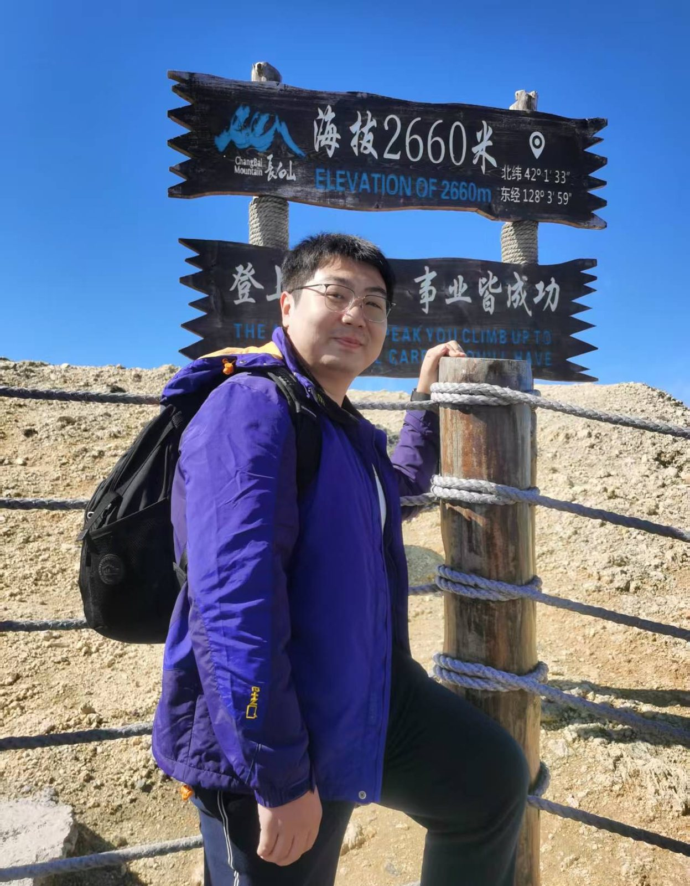
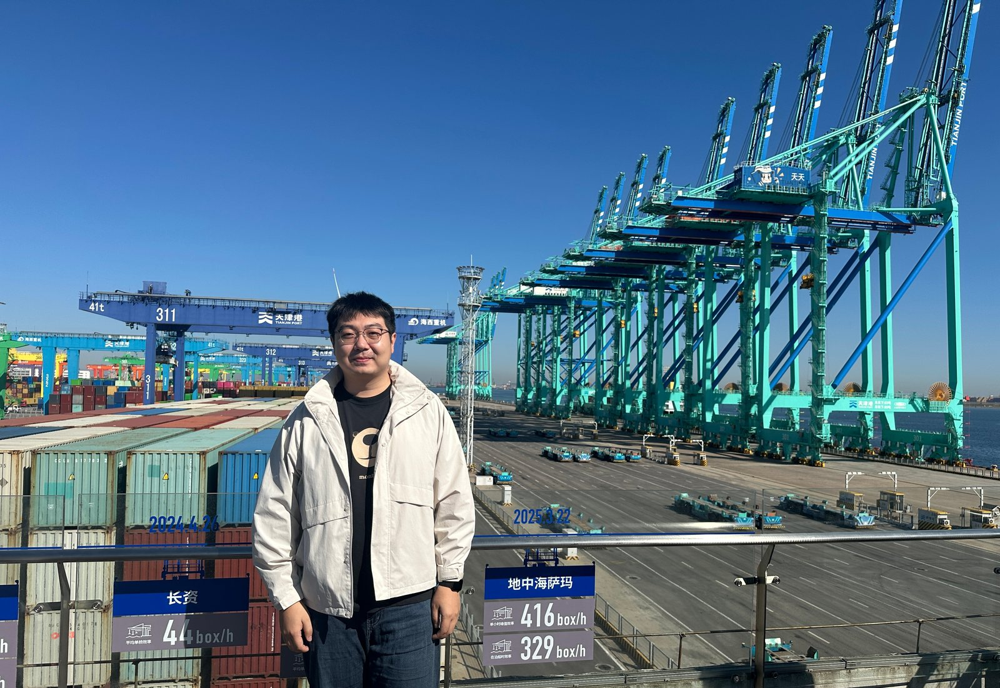

近况
-
入职吉林大学基础医学院免疫学系
继续开展智能纳米材料与重大疾病精准治疗研究。
-
国家自然科学基金青年学生项目立项
主持“手性单壁碳纳米管对 α-突触核蛋白选择性吸附的机制与生物效应研究”，资助 30 万元。
-
入选中国科协青年人才托举工程博士生专项
首批入选，托举学会为中国生物材料学会。
论文
-
Inhalable nanocatalytic therapeutics for viral pneumonia
Nature Materials, 24(4): 637-648.
-
Photosynthesis pneumatic patch promoted deep-wound healing
Cell Biomaterials, 1(5): 100047.
-
Sonogenic malate depleting modulator for tumor metabolic reprogramming and antitumor immune activation
Bioactive Materials, 56: 682.
-
Acoustoelectric nanoregulator for modulating the endoplasmic reticulum and mitochondria in cell fate regulation
Bioactive Materials, 68: 522-538.
-
Single-atom nanocatalytic therapy for suppression of neuroinflammation by inducing autophagy of abnormal mitochondria
ACS Nano, 17(8): 7511-7529.
-
Ultrasound-remote selected activation mitophagy for precise treatment of rheumatoid arthritis by two-dimensional piezoelectric nanosheets
ACS Nano, 17(1): 621-635.
-
Semi-artificial bacterial pyroptosiser for reverse the metabolic reprogramming of tumor microenvironment
Chemical Engineering Journal, 508: 161011.
-
Microneedle patch based on molecular motor as a spatio-temporal controllable dosing strategy of L-DOPA for Parkinson’s disease
Chemical Engineering Journal, 427: 131555.
-
Ultrasound-triggered lysosomal alkalinization to block autophagy in tumor therapy
Biomaterials, 320: 123250.
-
Ultrasound-triggered MoS2@CeO2 piezoelectric heterojunction nanozyme treats acute kidney injury by promoting mitophagy and inhibiting ferroptosis
Materials Today Bio, In press.
-
Nano‐Sonogenetic Switches Orchestrate Mitochondrial Fusion to Reprogram Tumor Metabolic Homeostasis
Acta Biomaterialia, In press.
-
Dynamic immunomodulatory nanoarchitectonics: Rewiring tissue regenerative microenvironment via intelligent regulation
Nano Research, 18(12): 94907777.
-
Engineered inhalable nanocatalytic therapeutics for Parkinson’s disease by inducing mitochondrial autophagy
Materials & Design, 228: 111808.
-
Engineered inhaled nanocatalytic therapy for ischemic cerebrovascular disease by inducing autophagy of abnormal mitochondria
npj Regenerative Medicine, 8: 44.
-
NIR-remote selectively triggered buprenorphine hydrochloride release from microneedle patches for the treatment of neuropathic pain
ACS Biomaterials Science & Engineering, 10(8): 5001-5013.
-
Bioorthogonal optimized virus immuno-nanomedicine (BOVIN)
Nature Communications, 17(1): 301.
-
Microorganism microneedle micro-engine depth drug delivery
Nature Communications, 15(1): 8947.
-
Functional modification of gut bacteria for disease diagnosis and treatment
Med, 5(8): 863-885.
-
Hijacking actin-pre-liquid–liquid phase separation suppresses malignant tumor invasion and growth
Journal of the American Chemical Society, 148(10): 10561-10584.
-
Bionic dormant body of timed wake-up for bacteriotherapy in vivo
ACS Nano, 16(1): 823-836.
-
Therapy-chemotherapy dual mode intelligent nano hydrogen generator for tumor treatment
Chemical Engineering Journal, 528: 172135.
-
Environmental adaptive nanoplatform for bacteriotherapy
Chemical Engineering Journal, 524: 169148.
-
Nanoarmour-shielded single-cell factory for bacteriotherapy of Parkinson’s disease
Journal of Controlled Release, 338: 742-753.
-
Engineered bioorthogonal cell delivery system for in situ antimicrobial peptide recruitment during systemic bacterial infection
Acta Biomaterialia, 198: 115-130.
-
Near-infrared remote triggering of bio-enzyme activation to control intestinal colonization by orally administered microorganisms
Acta Biomaterialia, 189: 574-588.
-
Near infrared-emitting persistent luminescent imaging-guided gene/optothermal synergistic therapy for enhancing tumor cell damage
Journal of Colloid and Interface Science, 702: 138815.
-
Surface nanocoating-based universal platform for programmed delivery of microorganisms in complicated digestive tract
Journal of Colloid and Interface Science, 673: 765-780.
-
Time-responsive activity of engineered bacteria for local sterilization and biofilm removal in periodontitis
Advanced Healthcare Materials, 14(1): 2401190.
-
Magnetron traps therapeutics for localized bacterial capture and overcome ulcer infection
Materials Today Advances, 11: 100147.
-
(WO + ICG)@PLGA@lipid/plasmid DNA nanocomplexes as core–shell vectors for synergistic genetic/photothermal therapy
Materials Chemistry Frontiers, 8: 3747-3757.
-
Biomolecular interactions of carbon nanotubes with amyloid-β proteins
Journal of Materials Chemistry B, 13(23): 6664-6678.
-
W18O49 crystal and ICG labeled macrophage: An efficient targeting vector for fluorescence imaging-guided photothermal therapy
Biomedical and Environmental Sciences, 38(1): 100-105.
-
Advances in Alzheimer’s disease control approaches via carbon nanotubes
Nanomedicine, 20(1): 63-77.
-
Nondestructive tracking of viral infections by viral protein-initiated fluorescent sensors
Journal of Virology, 100(4): e00044-26.
-
Charge-neutralized polyethylenimine-lipid nanoparticles for gene transfer to human embryonic stem cells
Bioorganic & Medicinal Chemistry, 118: 118008.
-
Applications of nanomaterial-microorganism hybrid systems in the treatment of tumor
Advanced Therapeutics, 8(3): 2400425.
-
Engineering mucosal immunity: Advanced vaccine platforms against respiratory pathogens
Precision Medicine and Engineering, 2(3): 100040.
履历
经历
-
2026 – 至今
吉林大学基础医学院免疫学系 副教授
-
2020 – 2026
天津大学生物医学工程博士
-
2016 – 2020
吉林大学生物医学工程学士
获奖
-
2025
宝钢优秀学生特等奖国家级宝钢教育基金会 · 全国共 10 名博士生
-
2025
博士研究生国家奖学金国家级中华人民共和国教育部
-
2023
博士研究生国家奖学金国家级中华人民共和国教育部
-
2025
中国科协青年人才托举工程博士生专项计划国家级中国科学技术协会 · 首批入选
-
2019
“互联网+”大学生创新创业大赛国家级国家级铜奖、省级金奖
-
2023
第十二届中国创新创业大赛（天津赛区）二等奖省级医美微针贴片技术及产品开发
-
2024
中国产学研合作创新成果优秀奖协会生物因子递送载体创制及应用
-
2025
天津大学学生科学奖校级学校最高荣誉
-
2024
王克昌奖学金单项奖校级天津大学
-
2021 – 2025
天津大学三好学生、学业一等奖学金校级三好学生 2021 / 2023 / 2025；学业一等奖学金 2021–2023
项目
-
2025 – 2026
手性单壁碳纳米管对 α-突触核蛋白选择性吸附的机制与生物效应研究主持国家自然科学基金青年学生项目 · 30 万元 · 在研
-
2025
中国生物材料学会托举计划主持中国科协青年人才托举工程博士生专项
-
2023
基于微藻生物活性微针贴片的研制及在改善乏氧性疾病中的应用主持天津市研究生科研创新项目 · 1 万元 · 已结题
-
2023 – 2026
闪烁体纳米光遗传定点操纵体内 Parkin 磷酸化调控帕金森症线粒体自噬研究参与国家自然科学基金面上项目 · 54 万元 · 在研
-
2021 – 2024
重要公共场所生物恐怖防控技术研究参与国家重点研发计划 · 95 万元 · 已结题
-
2020 – 2023
基于稀土上转换长余辉光遗传操控肿瘤细胞焦亡的应用基础研究参与国家自然科学基金青年项目 · 24 万元 · 已结题
专利
- 一种基于 PFO-Azo 聚合物的单一手性结构 CNTs 分离方法
- 一种触发翻译后修饰的声电 Ba0.85Ca0.15Ti0.9Yb0.1O3 纳米粒子及其制备方法和应用
- Anti-hair loss and hair growth integrated core-shell microneedle patch
- High anticoagulation extracorporeal circulation tube
- High anticoagulation ECMO and extracorporeal circulation consumable
- 一种高抗凝 ECMO 和体外循环耗材
- 一种高抗凝体外循环管路
- 触发线粒体融合的压电纳米材料及其制备方法与应用
学术服务
助理编辑，Regenerative Biomaterials。青年编委，MedMat。审稿：Military Medical Research、ACS Nano、Journal of Nanobiotechnology、Water Research、BBA - Reviews on Cancer、Separation and Purification Technology、Journal of Agricultural and Food Chemistry、Regenerative Biomaterials、Surfaces and Interfaces、RSC Advances、Mini-Reviews in Medicinal Chemistry。
生活掠影


联系
- 邮箱libowen@jlu.edu.cn
- 地址吉林省长春市朝阳区新民大街 126 号，吉林大学基础医学院免疫学系，130021
- ORCID0009-0000-2712-1812
- 地图在 OpenStreetMap 中打开